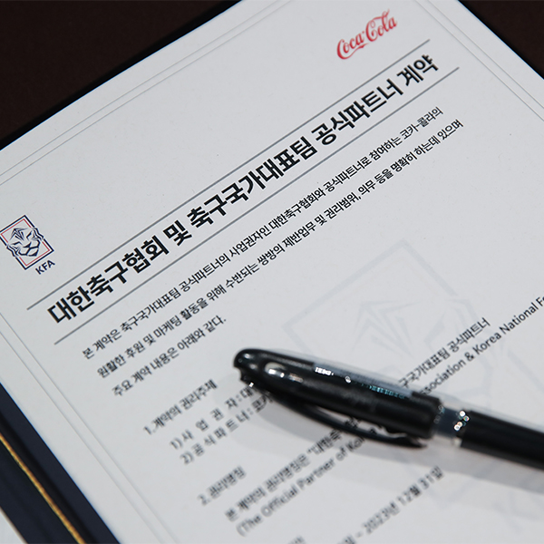
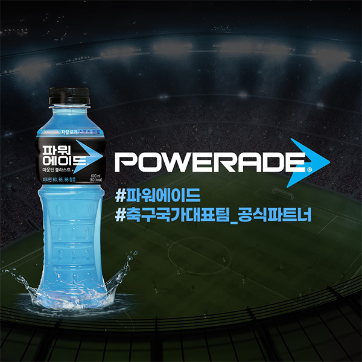
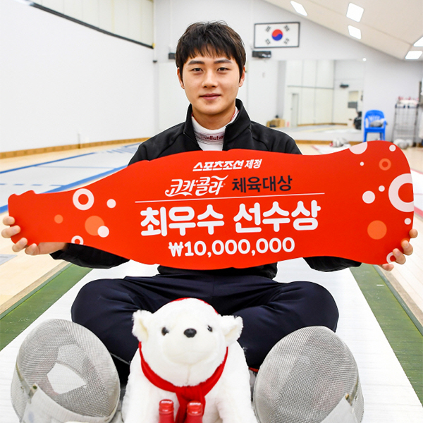

HOME > 정도경영 > 후원&지원
후원&지원
KFA 공식 파트너
코카-콜라 음료는 한국 축구의 발전을 유도하기 위해 대한축구협회와 공식후원 계약을 맺고 적극적인 지원활동을 벌여왔습니다.
-

- 파워에이드, 국가대표 축구팀 공식 파트너십 연장
- 코카-콜라의 파워에이드는 FIFA 월드컵과 올림픽 등
글로벌 스포츠 이벤트와국내 스포츠 대회의 공식 스포츠 음료로서
후원 활동을 활발히 진행해 왔습니다.
코카-콜라는 2023년까지 대한민국 축구 국가대표팀의 ‘공식 스포츠 음료’
파트너사로써의 역할을 든든히 소화할 예정입니다.
-
- 2003년부터 2023년까지
KFA 및 축구국가대표팀과 함께하는 코카-콜라 - 지난 5일 파주 NFC(국가대표 트레이닝 센터)에서 열린 공식 파트너 계약
조인식에는 최수정 한국 코카-콜라 대표, 정몽규 대한축구협회 회장,
파울루 벤투 국가대표팀 감독, 김학범 올림픽 대표팀 감독,
국가대표 조현우, 이정협 선수가 참석하여 자리를 빛냈습니다.
- 2003년부터 2023년까지
-

- 대한민국 축구 국가대표팀과 2023년까지 함께하는
공식 파트너 음료 “파워에이드” - 2018 평창 동계 올림픽, 러시아 월드컵 등
굵직한 세계 스포츠 이벤트에서 함께한 파워에이드는
땀으로 배출되어 손실된 에너지를 충전하는 저칼로리 이온음료입니다.
꿈을 향해 멈추지 않고 도전하는 이들을 위해서,
스포츠를 사랑하는 이들을 위해서!
성장부터 성공까지, 언제나 곁을 지키며 응원하는 음료!
국가대표가 사랑하는 음료가 바로 파워에이드입니다.
- 대한민국 축구 국가대표팀과 2023년까지 함께하는
스포츠로 하나 되는 짜릿한 순간!
코카-콜라는 올림픽, 월드컵과 같은 세계적 스포츠 행사를 90여 년간 후원해왔으며 대한축구협회의 공식 파트너사로 함께 하고 있습니다.
파워에이드는 공식 스포츠음료로 지정되어 그동안 스포츠 대회의 성공적인 개최와 국가대표 선수들의 선전을 기원하는 다양한 활동을 펼쳐 왔습니다.
코카콜라 체육대상
코카-콜라 음료는 아마추어 스포츠 발전을 지원하고 있습니다.
-

- 제25회 코카-콜라 체육대상
‘남자 펜싱 사브르 세계랭킹 1위’ 오상욱 최우수선수상 - 코카-콜라 체육대상은 1928년 암스테르담 올림픽부터
약 90여 년 간 올림픽 파트너사로 활동해 온 코카-콜라가
한국 스포츠발전의 밑거름인 아마추어 스포츠를 지원하고자 시작한
국내 유일의 아마추어 시상식으로 1995년부터
다양한 종목에서 500여 명의 선수, 지도자들을 격려해왔습니다.
- 제25회 코카-콜라 체육대상
-
- 아마추어 스포츠 발전의 밑거름인 유망주 발굴
- 국민들 관심에 소외된 비인기 종목 선수들을 발굴, 지원함으로써
다양한 스포츠 종목이 성장할 수 있도록 독려해왔습니다.
신인상을 수여했던 유승민(3회), 김연아(10회), 윤성빈(21회) 등이 성장해
세계 무대에서 대한민국의 위상을 드높이는 등
한국 스포츠 발전을 견인하고 있습니다.
스포츠로 하나 되는 짜릿한 순간!
코카-콜라 체육대상이 한국 아마추어 스포츠 발전에 기여한 공로는 각종 세계 스포츠 대회에서 증명되고 있습니다.
역대 한국 코카-콜라 체육대상 수상자에 빛나는 선수로는 1회 황영조(마라톤)를 시작으로 이봉주(마라톤), 전이경(쇼트트랙), 유승민(탁구), 김연아(피겨스케이팅),
장미란(역도), 이상화(스피드스케이팅), 이승훈(스피드스케이팅), 박태환(수영), 양학선(체조) 등 영광의 얼굴들이 망라되어 있다.